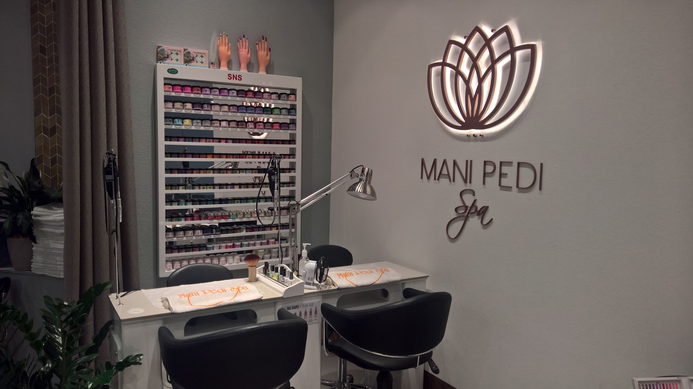
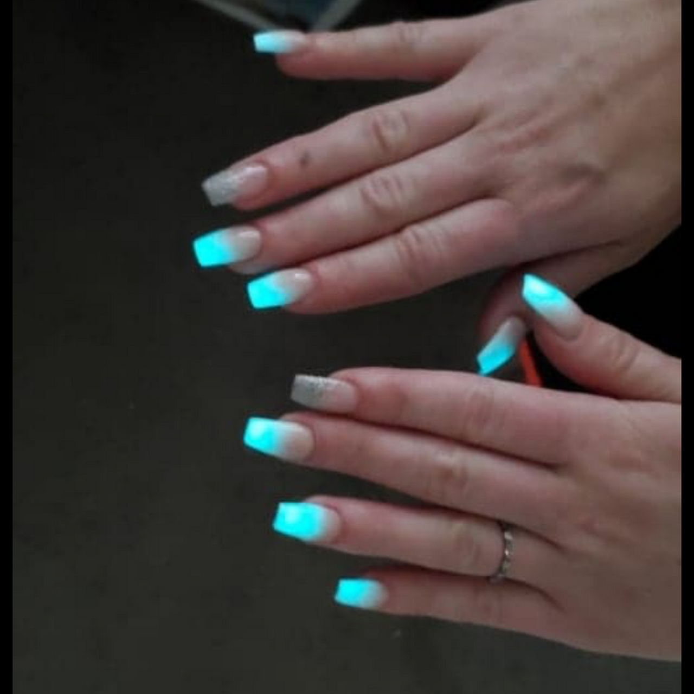
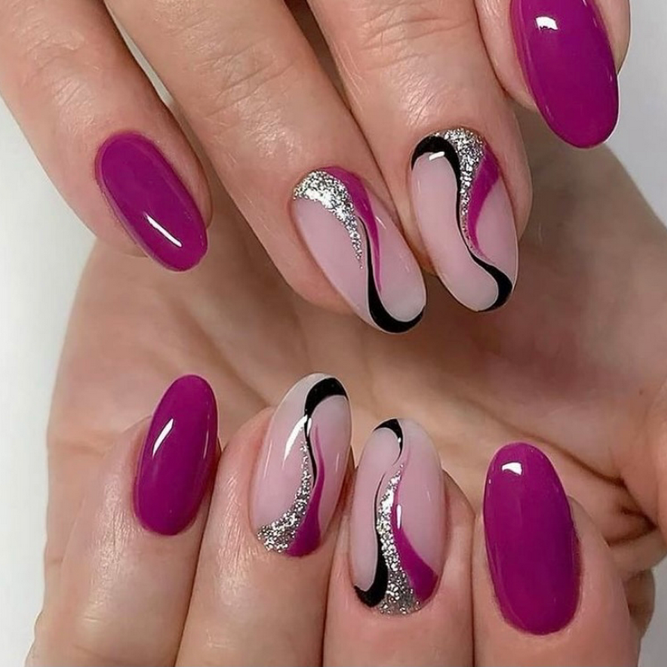
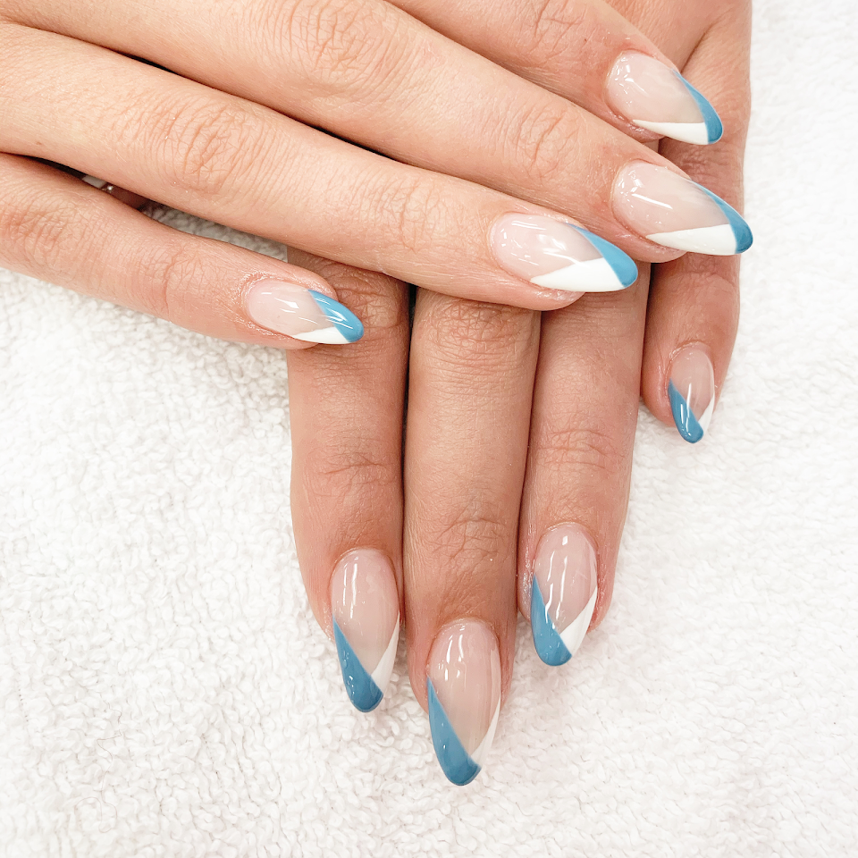

Ayesha's Nail Art & Spa

Taking care of, fixing, painting, decorating, and elongating nails are all aspects of Nail Art technology (Fingers and Toes). In recent years, press-on nails have evolved from a questionable beauty trend to a subtle style statement. This is because modern press-ons are "more flexible," and are designed to "fit a larger variety of natural nails," as Bachik puts it. Press-on nail art from businesses like Chillhouse and Dashing Diva looks so good, you might not even realize it wasn't painted by hand. Press-on nail designs, Bachik explains, follow fashion trends. Most of these would be prohibitively expensive and time-consuming to obtain at a salon.



BE SAFE AND WELL
- Putting sneeze barriers on all of our tables so that nobody gets sick. Seating distances for all clients will be 6 feet.
- All areas of the store will have hand sanitizers for your convenience.
- Employees are expected to maintain a consistently clean and sanitary business.
- Keep tabs on everyone's health and make sure the sick ones stay at home.
- Please keep personal guests to a minimum (one) for the safety of our customers and staff.
- Everyone who enters must wears a face mask.